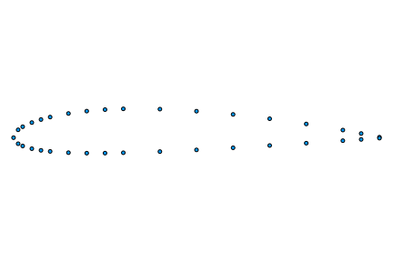
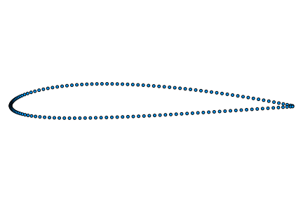
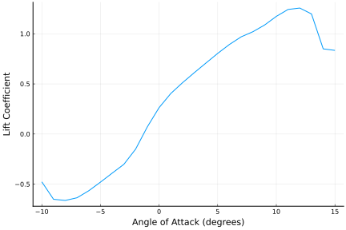
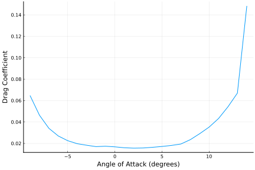
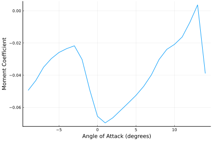

Example Usage
This guide demonstrate how to use the basic capabilities of this package. Further information about using this package may be found in the Public API.
Loading Airfoil Geometry
Before any analysis can be performed, we need to load our airfoil geometry into XFOIL. This can be accomplished using the set_coordinates function.
using Xfoil, Plots, Printf
pyplot()
# read airfoil coordinates from a file
x, y = open("naca2412.dat", "r") do f
x = Float64[]
y = Float64[]
for line in eachline(f)
entries = split(chomp(line))
push!(x, parse(Float64, entries[1]))
push!(y, parse(Float64, entries[2]))
end
x, y
end
# load airfoil coordinates into XFOIL
Xfoil.set_coordinates(x,y)
# plot the airfoil geometry
scatter(x, y, label="", framestyle=:none, aspect_ratio=1.0, show=true)[ Info: Installing matplotlib via the Conda matplotlib package...
[ Info: Running `conda install -q -y matplotlib` in root environment
Collecting package metadata (current_repodata.json): ...working... done
Solving environment: ...working... done
## Package Plan ##
environment location: /home/runner/.julia/conda/3
added / updated specs:
- matplotlib
The following packages will be downloaded:
package | build
---------------------------|-----------------
alsa-lib-1.2.7.2 | h166bdaf_0 581 KB conda-forge
attr-2.5.1 | h166bdaf_1 69 KB conda-forge
brotli-1.0.9 | h166bdaf_7 18 KB conda-forge
brotli-bin-1.0.9 | h166bdaf_7 19 KB conda-forge
cycler-0.11.0 | pyhd8ed1ab_0 10 KB conda-forge
dbus-1.13.6 | h5008d03_3 604 KB conda-forge
expat-2.4.8 | h27087fc_0 187 KB conda-forge
fftw-3.3.10 |nompi_hf0379b8_105 2.2 MB conda-forge
font-ttf-dejavu-sans-mono-2.37| hab24e00_0 388 KB conda-forge
font-ttf-inconsolata-3.000 | h77eed37_0 94 KB conda-forge
font-ttf-source-code-pro-2.038| h77eed37_0 684 KB conda-forge
font-ttf-ubuntu-0.83 | hab24e00_0 1.9 MB conda-forge
fontconfig-2.14.0 | hc2a2eb6_1 318 KB conda-forge
fonts-conda-ecosystem-1 | 0 4 KB conda-forge
fonts-conda-forge-1 | 0 4 KB conda-forge
fonttools-4.37.1 | py310h5764c6d_0 1.9 MB conda-forge
freetype-2.12.1 | hca18f0e_0 884 KB conda-forge
gettext-0.19.8.1 | h73d1719_1008 3.6 MB conda-forge
glib-2.72.1 | h6239696_0 443 KB conda-forge
glib-tools-2.72.1 | h6239696_0 107 KB conda-forge
gst-plugins-base-1.20.3 | h57caac4_1 2.8 MB conda-forge
gstreamer-1.20.3 | hd4edc92_1 2.0 MB conda-forge
icu-70.1 | h27087fc_0 13.5 MB conda-forge
jack-1.9.18 | h8c3723f_1003 647 KB conda-forge
jpeg-9e | h166bdaf_2 269 KB conda-forge
keyutils-1.6.1 | h166bdaf_0 115 KB conda-forge
kiwisolver-1.4.4 | py310hbf28c38_0 76 KB conda-forge
krb5-1.19.3 | h3790be6_0 1.4 MB conda-forge
lcms2-2.12 | hddcbb42_0 443 KB conda-forge
lerc-4.0.0 | h27087fc_0 275 KB conda-forge
libbrotlicommon-1.0.9 | h166bdaf_7 65 KB conda-forge
libbrotlidec-1.0.9 | h166bdaf_7 33 KB conda-forge
libbrotlienc-1.0.9 | h166bdaf_7 287 KB conda-forge
libcap-2.65 | ha37c62d_0 97 KB conda-forge
libclang-14.0.6 |default_h2e3cab8_0 127 KB conda-forge
libclang13-14.0.6 |default_h3a83d3e_0 10.6 MB conda-forge
libcups-2.3.3 | h3e49a29_2 4.5 MB conda-forge
libdb-6.2.32 | h9c3ff4c_0 23.3 MB conda-forge
libdeflate-1.14 | h166bdaf_0 81 KB conda-forge
libedit-3.1.20191231 | he28a2e2_2 121 KB conda-forge
libevent-2.1.10 | h9b69904_4 1.1 MB conda-forge
libflac-1.3.4 | h27087fc_0 474 KB conda-forge
libglib-2.72.1 | h2d90d5f_0 3.1 MB conda-forge
libiconv-1.16 | h516909a_0 1.4 MB conda-forge
libllvm14-14.0.6 | he0ac6c6_0 35.2 MB conda-forge
libogg-1.3.4 | h7f98852_1 206 KB conda-forge
libopus-1.3.1 | h7f98852_1 255 KB conda-forge
libpng-1.6.37 | h753d276_4 371 KB conda-forge
libpq-14.5 | hd77ab85_0 3.0 MB conda-forge
libsndfile-1.0.31 | h9c3ff4c_1 602 KB conda-forge
libsqlite-3.39.3 | h753d276_0 789 KB conda-forge
libtiff-4.4.0 | h55922b4_4 651 KB conda-forge
libtool-2.4.6 | h9c3ff4c_1008 511 KB conda-forge
libudev1-249 | h166bdaf_4 109 KB conda-forge
libvorbis-1.3.7 | h9c3ff4c_0 280 KB conda-forge
libwebp-base-1.2.4 | h166bdaf_0 404 KB conda-forge
libxcb-1.13 | h7f98852_1004 391 KB conda-forge
libxkbcommon-1.0.3 | he3ba5ed_0 581 KB conda-forge
libxml2-2.9.14 | h22db469_4 771 KB conda-forge
matplotlib-3.5.3 | py310hff52083_2 7 KB conda-forge
matplotlib-base-3.5.3 | py310h8d5ebf3_2 7.4 MB conda-forge
munkres-1.1.4 | pyh9f0ad1d_0 12 KB conda-forge
mysql-common-8.0.30 | haf5c9bc_1 1.9 MB conda-forge
mysql-libs-8.0.30 | h28c427c_1 1.9 MB conda-forge
nspr-4.32 | h9c3ff4c_1 233 KB conda-forge
nss-3.78 | h2350873_0 2.1 MB conda-forge
openjpeg-2.5.0 | h7d73246_1 533 KB conda-forge
packaging-21.3 | pyhd8ed1ab_0 36 KB conda-forge
pcre-8.45 | h9c3ff4c_0 253 KB conda-forge
pillow-9.2.0 | py310hbd86126_2 45.0 MB conda-forge
ply-3.11 | py_1 44 KB conda-forge
portaudio-19.6.0 | h8e90077_6 132 KB conda-forge
pthread-stubs-0.4 | h36c2ea0_1001 5 KB conda-forge
pulseaudio-14.0 | h0868958_9 1.7 MB conda-forge
pyparsing-3.0.9 | pyhd8ed1ab_0 79 KB conda-forge
pyqt-5.15.7 | py310h29803b5_0 6.2 MB conda-forge
pyqt5-sip-12.11.0 | py310hd8f1fbe_0 86 KB conda-forge
python-dateutil-2.8.2 | pyhd8ed1ab_0 240 KB conda-forge
qt-main-5.15.6 | hc525480_0 61.5 MB conda-forge
sip-6.6.2 | py310hd8f1fbe_0 522 KB conda-forge
sqlite-3.39.3 | h4ff8645_0 789 KB conda-forge
toml-0.10.2 | pyhd8ed1ab_0 18 KB conda-forge
tornado-6.2 | py310h5764c6d_0 664 KB conda-forge
unicodedata2-14.0.0 | py310h5764c6d_1 496 KB conda-forge
xcb-util-0.4.0 | h166bdaf_0 20 KB conda-forge
xcb-util-image-0.4.0 | h166bdaf_0 24 KB conda-forge
xcb-util-keysyms-0.4.0 | h166bdaf_0 12 KB conda-forge
xcb-util-renderutil-0.3.9 | h166bdaf_0 15 KB conda-forge
xcb-util-wm-0.4.1 | h166bdaf_0 55 KB conda-forge
xorg-libxau-1.0.9 | h7f98852_0 13 KB conda-forge
xorg-libxdmcp-1.1.3 | h7f98852_0 19 KB conda-forge
zstd-1.5.2 | h6239696_4 448 KB conda-forge
------------------------------------------------------------
Total: 257.0 MB
The following NEW packages will be INSTALLED:
alsa-lib conda-forge/linux-64::alsa-lib-1.2.7.2-h166bdaf_0
attr conda-forge/linux-64::attr-2.5.1-h166bdaf_1
brotli conda-forge/linux-64::brotli-1.0.9-h166bdaf_7
brotli-bin conda-forge/linux-64::brotli-bin-1.0.9-h166bdaf_7
cycler conda-forge/noarch::cycler-0.11.0-pyhd8ed1ab_0
dbus conda-forge/linux-64::dbus-1.13.6-h5008d03_3
expat conda-forge/linux-64::expat-2.4.8-h27087fc_0
fftw conda-forge/linux-64::fftw-3.3.10-nompi_hf0379b8_105
font-ttf-dejavu-s~ conda-forge/noarch::font-ttf-dejavu-sans-mono-2.37-hab24e00_0
font-ttf-inconsol~ conda-forge/noarch::font-ttf-inconsolata-3.000-h77eed37_0
font-ttf-source-c~ conda-forge/noarch::font-ttf-source-code-pro-2.038-h77eed37_0
font-ttf-ubuntu conda-forge/noarch::font-ttf-ubuntu-0.83-hab24e00_0
fontconfig conda-forge/linux-64::fontconfig-2.14.0-hc2a2eb6_1
fonts-conda-ecosy~ conda-forge/noarch::fonts-conda-ecosystem-1-0
fonts-conda-forge conda-forge/noarch::fonts-conda-forge-1-0
fonttools conda-forge/linux-64::fonttools-4.37.1-py310h5764c6d_0
freetype conda-forge/linux-64::freetype-2.12.1-hca18f0e_0
gettext conda-forge/linux-64::gettext-0.19.8.1-h73d1719_1008
glib conda-forge/linux-64::glib-2.72.1-h6239696_0
glib-tools conda-forge/linux-64::glib-tools-2.72.1-h6239696_0
gst-plugins-base conda-forge/linux-64::gst-plugins-base-1.20.3-h57caac4_1
gstreamer conda-forge/linux-64::gstreamer-1.20.3-hd4edc92_1
icu conda-forge/linux-64::icu-70.1-h27087fc_0
jack conda-forge/linux-64::jack-1.9.18-h8c3723f_1003
jpeg conda-forge/linux-64::jpeg-9e-h166bdaf_2
keyutils conda-forge/linux-64::keyutils-1.6.1-h166bdaf_0
kiwisolver conda-forge/linux-64::kiwisolver-1.4.4-py310hbf28c38_0
krb5 conda-forge/linux-64::krb5-1.19.3-h3790be6_0
lcms2 conda-forge/linux-64::lcms2-2.12-hddcbb42_0
lerc conda-forge/linux-64::lerc-4.0.0-h27087fc_0
libbrotlicommon conda-forge/linux-64::libbrotlicommon-1.0.9-h166bdaf_7
libbrotlidec conda-forge/linux-64::libbrotlidec-1.0.9-h166bdaf_7
libbrotlienc conda-forge/linux-64::libbrotlienc-1.0.9-h166bdaf_7
libcap conda-forge/linux-64::libcap-2.65-ha37c62d_0
libclang conda-forge/linux-64::libclang-14.0.6-default_h2e3cab8_0
libclang13 conda-forge/linux-64::libclang13-14.0.6-default_h3a83d3e_0
libcups conda-forge/linux-64::libcups-2.3.3-h3e49a29_2
libdb conda-forge/linux-64::libdb-6.2.32-h9c3ff4c_0
libdeflate conda-forge/linux-64::libdeflate-1.14-h166bdaf_0
libedit conda-forge/linux-64::libedit-3.1.20191231-he28a2e2_2
libevent conda-forge/linux-64::libevent-2.1.10-h9b69904_4
libflac conda-forge/linux-64::libflac-1.3.4-h27087fc_0
libglib conda-forge/linux-64::libglib-2.72.1-h2d90d5f_0
libiconv conda-forge/linux-64::libiconv-1.16-h516909a_0
libllvm14 conda-forge/linux-64::libllvm14-14.0.6-he0ac6c6_0
libogg conda-forge/linux-64::libogg-1.3.4-h7f98852_1
libopus conda-forge/linux-64::libopus-1.3.1-h7f98852_1
libpng conda-forge/linux-64::libpng-1.6.37-h753d276_4
libpq conda-forge/linux-64::libpq-14.5-hd77ab85_0
libsndfile conda-forge/linux-64::libsndfile-1.0.31-h9c3ff4c_1
libtiff conda-forge/linux-64::libtiff-4.4.0-h55922b4_4
libtool conda-forge/linux-64::libtool-2.4.6-h9c3ff4c_1008
libudev1 conda-forge/linux-64::libudev1-249-h166bdaf_4
libvorbis conda-forge/linux-64::libvorbis-1.3.7-h9c3ff4c_0
libwebp-base conda-forge/linux-64::libwebp-base-1.2.4-h166bdaf_0
libxcb conda-forge/linux-64::libxcb-1.13-h7f98852_1004
libxkbcommon conda-forge/linux-64::libxkbcommon-1.0.3-he3ba5ed_0
libxml2 conda-forge/linux-64::libxml2-2.9.14-h22db469_4
matplotlib conda-forge/linux-64::matplotlib-3.5.3-py310hff52083_2
matplotlib-base conda-forge/linux-64::matplotlib-base-3.5.3-py310h8d5ebf3_2
munkres conda-forge/noarch::munkres-1.1.4-pyh9f0ad1d_0
mysql-common conda-forge/linux-64::mysql-common-8.0.30-haf5c9bc_1
mysql-libs conda-forge/linux-64::mysql-libs-8.0.30-h28c427c_1
nspr conda-forge/linux-64::nspr-4.32-h9c3ff4c_1
nss conda-forge/linux-64::nss-3.78-h2350873_0
openjpeg conda-forge/linux-64::openjpeg-2.5.0-h7d73246_1
packaging conda-forge/noarch::packaging-21.3-pyhd8ed1ab_0
pcre conda-forge/linux-64::pcre-8.45-h9c3ff4c_0
pillow conda-forge/linux-64::pillow-9.2.0-py310hbd86126_2
ply conda-forge/noarch::ply-3.11-py_1
portaudio conda-forge/linux-64::portaudio-19.6.0-h8e90077_6
pthread-stubs conda-forge/linux-64::pthread-stubs-0.4-h36c2ea0_1001
pulseaudio conda-forge/linux-64::pulseaudio-14.0-h0868958_9
pyparsing conda-forge/noarch::pyparsing-3.0.9-pyhd8ed1ab_0
pyqt conda-forge/linux-64::pyqt-5.15.7-py310h29803b5_0
pyqt5-sip conda-forge/linux-64::pyqt5-sip-12.11.0-py310hd8f1fbe_0
python-dateutil conda-forge/noarch::python-dateutil-2.8.2-pyhd8ed1ab_0
qt-main conda-forge/linux-64::qt-main-5.15.6-hc525480_0
sip conda-forge/linux-64::sip-6.6.2-py310hd8f1fbe_0
sqlite conda-forge/linux-64::sqlite-3.39.3-h4ff8645_0
toml conda-forge/noarch::toml-0.10.2-pyhd8ed1ab_0
tornado conda-forge/linux-64::tornado-6.2-py310h5764c6d_0
unicodedata2 conda-forge/linux-64::unicodedata2-14.0.0-py310h5764c6d_1
xcb-util conda-forge/linux-64::xcb-util-0.4.0-h166bdaf_0
xcb-util-image conda-forge/linux-64::xcb-util-image-0.4.0-h166bdaf_0
xcb-util-keysyms conda-forge/linux-64::xcb-util-keysyms-0.4.0-h166bdaf_0
xcb-util-renderut~ conda-forge/linux-64::xcb-util-renderutil-0.3.9-h166bdaf_0
xcb-util-wm conda-forge/linux-64::xcb-util-wm-0.4.1-h166bdaf_0
xorg-libxau conda-forge/linux-64::xorg-libxau-1.0.9-h7f98852_0
xorg-libxdmcp conda-forge/linux-64::xorg-libxdmcp-1.1.3-h7f98852_0
zstd conda-forge/linux-64::zstd-1.5.2-h6239696_4
The following packages will be UPDATED:
libsqlite 3.39.2-h753d276_1 --> 3.39.3-h753d276_0
Preparing transaction: ...working... done
Verifying transaction: ...working... done
Executing transaction: ...working... done
Retrieving notices: ...working... done
Refining the Airfoil Geometry
It is often a good idea to refine airfoil discretizations prior to performing analyses using XFOIL. This may be accomplished using the pane function.
# repanel using XFOIL's `PANE` command
xr, yr = Xfoil.pane()
# plot the refined airfoil geometry
scatter(xr, yr, label="", framestyle=:none, aspect_ratio=1.0, show=true)
Defining Operating Conditions
We now need to define some operating conditions for our analysis. For inviscid analyses, only the angle of attack is required. For viscous analyses, the Reynolds number must also be specified.
# set operating conditions
alpha = -10:1:15 # range of angle of attacks, in degrees
re = 1e5 # Reynolds numberAirfoil Analysis
The solve_alpha function may now be used to perform an analysis to obtain the airfoil coefficients $c_l$, $c_d$, $c_{d_p}$, and $c_m$. Note that $c_{d_p}$ is profile drag. Skin friction drag may be obtained by subtracting the profile drag coefficient from the total drag coefficient i.e., $c_{d_f} = c_d - c_{d_p}$.
# initialize outputs
n_a = length(alpha)
c_l = zeros(n_a)
c_d = zeros(n_a)
c_dp = zeros(n_a)
c_m = zeros(n_a)
converged = zeros(Bool, n_a)
# determine airfoil coefficients across a range of angle of attacks
for i = 1:n_a
c_l[i], c_d[i], c_dp[i], c_m[i], converged[i] = Xfoil.solve_alpha(alpha[i], re; iter=100, reinit=true)
end
# print results
println("Angle\t\tCl\t\tCd\t\tCm\t\tConverged")
for i = 1:n_a
@printf("%8f\t%8f\t%8f\t%8f\t%d\n",alpha[i],c_l[i],c_d[i],c_m[i],converged[i])
end
# plot results
plot(alpha, c_l, label="", xlabel="Angle of Attack (degrees)", ylabel="Lift Coefficient", show=true)
plot(alpha, c_d, label="", xlabel="Angle of Attack (degrees)", ylabel="Drag Coefficient",
overwrite_figure=false, show=true)
plot(alpha, c_m, label="", xlabel="Angle of Attack (degrees)", ylabel="Moment Coefficient",
overwrite_figure=false, show=true)Angle Cl Cd Cm Converged
-10.000000 -0.476839 0.105880 -0.021870 1
-9.000000 -0.650846 0.064745 -0.049415 1
-8.000000 -0.662429 0.046357 -0.043245 1
-7.000000 -0.635637 0.034118 -0.035047 1
-6.000000 -0.565933 0.026936 -0.029727 1
-5.000000 -0.479794 0.022554 -0.025883 1
-4.000000 -0.390118 0.019767 -0.023503 1
-3.000000 -0.301726 0.018318 -0.021741 1
-2.000000 -0.150388 0.017026 -0.030251 1
-1.000000 0.071766 0.017390 -0.049186 1
0.000000 0.263166 0.016828 -0.065553 1
1.000000 0.404422 0.015968 -0.069629 1
2.000000 0.512138 0.015591 -0.066432 1
3.000000 0.611810 0.015749 -0.061841 1
4.000000 0.708466 0.016397 -0.057255 1
5.000000 0.804453 0.017169 -0.052536 1
6.000000 0.893460 0.018133 -0.046931 1
7.000000 0.969537 0.019458 -0.039801 1
8.000000 1.020497 0.023512 -0.030233 1
9.000000 1.087529 0.029120 -0.023964 1
10.000000 1.173720 0.035266 -0.020845 1
11.000000 1.242721 0.043276 -0.016251 1
12.000000 1.256900 0.054220 -0.007123 1
13.000000 1.197794 0.066990 0.003651 1
14.000000 0.849596 0.148350 -0.038913 1
15.000000 0.834505 0.182172 -0.053467 1  
Note that the order in which viscous analyses are performed matters since XFOIL uses boundary layer parameters corresponding to the last previously converged solution as an initial guess when solving for the current boundary layer parameters. This behavior can be disabled by passing the keyword argument pair reinit=true to solve_alpha
Sensitivity Analysis
Suppose we want to find the derivative of $c_l$, $c_d$, and $c_m$ with respect to the angle of attack. One approach to calculate these derivatives would be to use the finite difference method.
using Xfoil, Printf
# read airfoil into XFOIL
open("naca2412.dat", "r") do f
x = Float64[]
y = Float64[]
for line in eachline(f)
entries = split(chomp(line))
push!(x, parse(Float64, entries[1]))
push!(y, parse(Float64, entries[2]))
end
Xfoil.set_coordinates(x,y)
end
# repanel using XFOIL's `PANE` command
Xfoil.pane()
# set operating conditions
alpha = -10:1:15
re = 1e5
mach = 0.0
# set step size
h = 1e-6
# initialize outputs
n_a = length(alpha)
c_l_a = zeros(n_a)
c_d_a = zeros(n_a)
c_dp_a = zeros(n_a)
c_m_a = zeros(n_a)
converged = zeros(Bool, n_a)
for i = 1:n_a
c_l1, c_d1, c_dp1, c_m1, converged[i] = Xfoil.solve_alpha(alpha[i], re; mach, iter=100, reinit=true)
c_l2, c_d2, c_dp2, c_m2, converged[i] = Xfoil.solve_alpha(alpha[i]+h, re; mach, iter=100, reinit=true)
c_l_a[i] = (c_l2 - c_l1)/h * 180/pi
c_d_a[i] = (c_d2 - c_d1)/h * 180/pi
c_m_a[i] = (c_m2 - c_m1)/h * 180/pi
end
# print results
println("Angle\t\tdClda\t\tdCdda\t\tdCmda\t\tConverged")
for i = 1:n_a
@printf("%8f\t%8f\t%8f\t%8f\t%d\n",alpha[i],c_l_a[i],c_d_a[i],c_m_a[i],converged[i])
endAngle dClda dCdda dCmda Converged
-10.000000 5.440753 -0.593916 0.577301 1
-9.000000 4.368002 -1.420669 0.050753 1
-8.000000 -0.595924 -0.987825 0.492841 1
-7.000000 3.092874 -0.537248 0.414648 1
-6.000000 4.582598 -0.250074 0.264979 1
-5.000000 5.114411 -0.079249 0.248431 1
-4.000000 5.137603 -0.072158 0.141209 1
-3.000000 5.279715 -0.026029 0.058558 1
-2.000000 8.234179 -0.042702 -0.136227 1
-1.000000 10.039118 -0.015135 -0.885506 1
0.000000 12.644209 -0.082045 -1.124300 1
1.000000 9.212672 -0.093061 -0.324636 1
2.000000 3.641180 0.067090 0.521405 1
3.000000 6.896780 -0.016704 0.126283 1
4.000000 5.982546 0.027492 0.212131 1
5.000000 6.180839 0.018997 0.228296 1
6.000000 5.383315 0.055856 0.295899 1
7.000000 3.761211 0.103208 0.470835 1
8.000000 2.940949 0.295101 0.506869 1
9.000000 4.686078 0.293471 0.276193 1
10.000000 5.637746 0.418566 0.028201 1
11.000000 3.889931 0.448186 0.215136 1
12.000000 -1.889114 0.640222 0.760204 1
13.000000 -5.154260 0.958681 0.299039 1
14.000000 1.558546 1.051198 -0.058802 1
15.000000 -12.324476 0.840773 -2.777988 1A better approach might be to use the complex step method. To use this approach, however, we must use the complex-step enabled version of XFOIL provided by this package.
The complex-step version of each function is denoted by appending _cs to each function name. Note that there is no interaction between the two versions of XFOIL wrapped by this package, so if you wish to use the complex step version of the code you must append _cs to all function names.
For the complex step method to work, we also need to ensure that the imaginary portion of variables from previous iterations does not affect the solution for the current iteration. This may be achieved by setting reinit=true when calling solve_alpha.
using Xfoil, Printf
# read airfoil into XFOIL
open("naca2412.dat", "r") do f
x = Float64[]
y = Float64[]
for line in eachline(f)
entries = split(chomp(line))
push!(x, parse(Float64, entries[1]))
push!(y, parse(Float64, entries[2]))
end
Xfoil.set_coordinates_cs(x,y)
end
# repanel using XFOIL's `PANE` command
Xfoil.pane_cs()
# set operating conditions
alpha = -10:1:15
re = 1e5
mach = 0.0
# set step size
h = 1e-20im
# initialize outputs
n_a = length(alpha)
c_l_a = zeros(n_a)
c_d_a = zeros(n_a)
c_dp_a = zeros(n_a)
c_m_a = zeros(n_a)
converged = zeros(Bool, n_a)
for i = 1:n_a
c_l, c_d, c_dp, c_m, converged[i] = Xfoil.solve_alpha_cs(alpha[i]+h, re; mach, iter=100, reinit=true)
c_l_a[i] = imag(c_l)/imag(h) * 180/pi
c_d_a[i] = imag(c_d)/imag(h) * 180/pi
c_m_a[i] = imag(c_m)/imag(h) * 180/pi
end
# print results
println("Angle\t\tdClda\t\tdCdda\t\tdCmda\t\tConverged")
for i = 1:n_a
@printf("%8f\t%8f\t%8f\t%8f\t%d\n",alpha[i],c_l_a[i],c_d_a[i],c_m_a[i],converged[i])
endAngle dClda dCdda dCmda Converged
-10.000000 44356271193280.117188 -197681412084063.000000 78515419519006.562500 1
-9.000000 4.368078 -1.420675 0.050750 1
-8.000000 -0.595926 -0.987825 0.492841 1
-7.000000 3.094020 -0.537099 0.414477 1
-6.000000 4.583204 -0.250262 0.264980 1
-5.000000 5.114413 -0.079250 0.248431 1
-4.000000 5.137602 -0.072158 0.141209 1
-3.000000 5.279711 -0.026030 0.058559 1
-2.000000 8.234162 -0.042703 -0.136221 1
-1.000000 10.039099 -0.015135 -0.885503 1
0.000000 12.644207 -0.082045 -1.124300 1
1.000000 9.212668 -0.093061 -0.324636 1
2.000000 3.641152 0.067091 0.521409 1
3.000000 6.896776 -0.016704 0.126284 1
4.000000 5.982540 0.027492 0.212131 1
5.000000 6.180833 0.018997 0.228296 1
6.000000 5.383310 0.055856 0.295900 1
7.000000 3.761214 0.103208 0.470834 1
8.000000 2.940954 0.295101 0.506868 1
9.000000 4.686077 0.293470 0.276194 1
10.000000 5.637742 0.418565 0.028201 1
11.000000 3.889928 0.448186 0.215137 1
12.000000 -1.889107 0.640223 0.760202 1
13.000000 -5.154275 0.958683 0.299040 1
14.000000 1.555321 1.049194 -0.058519 1
15.000000 NaN NaN NaN 0Automated Angle of Attack Sweep
For performing angle of attack sweeps, the function alpha_sweep may also be used.
using Xfoil, Printf
# extract geometry
x = Float64[]
y = Float64[]
f = open("naca2412.dat", "r")
for line in eachline(f)
entries = split(chomp(line))
push!(x, parse(Float64, entries[1]))
push!(y, parse(Float64, entries[2]))
end
close(f)
# set operating conditions
alpha = -10:1:15
re = 1e5
c_l, c_d, c_dp, c_m, converged = Xfoil.alpha_sweep(x, y, alpha, re, iter=100, zeroinit=false, printdata=true, reinit=true)
Angle Cl Cd Cm Converged
-10.000000 -0.476839 0.105880 -0.021870 1
-9.000000 -0.650846 0.064745 -0.049415 1
-8.000000 -0.662429 0.046357 -0.043245 1
-7.000000 -0.635637 0.034118 -0.035047 1
-6.000000 -0.565933 0.026936 -0.029727 1
-5.000000 -0.479794 0.022554 -0.025883 1
-4.000000 -0.390118 0.019767 -0.023503 1
-3.000000 -0.301726 0.018318 -0.021741 1
-2.000000 -0.150388 0.017026 -0.030251 1
-1.000000 0.071766 0.017390 -0.049186 1
0.000000 0.263166 0.016828 -0.065553 1
1.000000 0.404422 0.015968 -0.069629 1
2.000000 0.512138 0.015591 -0.066432 1
3.000000 0.611810 0.015749 -0.061841 1
4.000000 0.708466 0.016397 -0.057255 1
5.000000 0.804453 0.017169 -0.052536 1
6.000000 0.893460 0.018133 -0.046931 1
7.000000 0.969537 0.019458 -0.039801 1
8.000000 1.020497 0.023512 -0.030233 1
9.000000 1.087529 0.029120 -0.023964 1
10.000000 1.173720 0.035266 -0.020845 1
11.000000 1.242721 0.043276 -0.016251 1
12.000000 1.256900 0.054220 -0.007123 1
13.000000 1.197794 0.066990 0.003651 1
14.000000 0.849596 0.148350 -0.038913 1
15.000000 0.834505 0.182172 -0.053467 1A version of alpha_sweep has also been implemented for use with the complex step version of XFOIL.
using Xfoil, Printf
# extract geometry
x = Float64[]
y = Float64[]
f = open("naca2412.dat", "r")
for line in eachline(f)
entries = split(chomp(line))
push!(x, parse(Float64, entries[1]))
push!(y, parse(Float64, entries[2]))
end
close(f)
# set operating conditions
alpha = -10:1:15
re = 1e5
mach = 0.0
# set step size
h = 1e-20im
c_l, c_d, c_dp, c_m, converged = Xfoil.alpha_sweep_cs(x, y, alpha .+ h,
re, mach=mach, iter=100, zeroinit=false, printdata=true, reinit=true)
println("Angle\t\tdClda\t\tdCdda\t\tdCmda\t\tConverged")
for i = 1:length(alpha)
@printf("%8f\t%8f\t%8f\t%8f\t%d\n", alpha[i], imag(c_l[i])/imag(h)*180/pi, imag(c_d[i])/imag(h)*180/pi, imag(c_m[i])/imag(h)*180/pi, converged[i])
end
Angle Cl Cd Cm Converged
-10.000000 -0.356858 0.093480 -0.032466 1
-9.000000 -0.650846 0.064745 -0.049415 1
-8.000000 -0.662429 0.046357 -0.043245 1
-7.000000 -0.635637 0.034118 -0.035047 1
-6.000000 -0.565933 0.026936 -0.029727 1
-5.000000 -0.479794 0.022554 -0.025883 1
-4.000000 -0.390118 0.019767 -0.023503 1
-3.000000 -0.301726 0.018318 -0.021741 1
-2.000000 -0.150388 0.017026 -0.030251 1
-1.000000 0.071766 0.017390 -0.049186 1
0.000000 0.263166 0.016828 -0.065553 1
1.000000 0.404422 0.015968 -0.069629 1
2.000000 0.512138 0.015591 -0.066432 1
3.000000 0.611810 0.015749 -0.061841 1
4.000000 0.708466 0.016397 -0.057255 1
5.000000 0.804453 0.017169 -0.052536 1
6.000000 0.893460 0.018133 -0.046931 1
7.000000 0.969537 0.019458 -0.039801 1
8.000000 1.020497 0.023512 -0.030233 1
9.000000 1.087529 0.029120 -0.023964 1
10.000000 1.173720 0.035266 -0.020845 1
11.000000 1.242721 0.043276 -0.016251 1
12.000000 1.256900 0.054220 -0.007123 1
13.000000 1.197794 0.066990 0.003651 1
14.000000 0.849596 0.148350 -0.038913 1
15.000000 NaN NaN NaN 0
Angle dClda dCdda dCmda Converged
-10.000000 44356271193280.117188 -197681412084063.000000 78515419519006.562500 1
-9.000000 4.368078 -1.420675 0.050750 1
-8.000000 -0.595926 -0.987825 0.492841 1
-7.000000 3.094020 -0.537099 0.414477 1
-6.000000 4.583204 -0.250262 0.264980 1
-5.000000 5.114413 -0.079250 0.248431 1
-4.000000 5.137602 -0.072158 0.141209 1
-3.000000 5.279711 -0.026030 0.058559 1
-2.000000 8.234162 -0.042703 -0.136221 1
-1.000000 10.039099 -0.015135 -0.885503 1
0.000000 12.644207 -0.082045 -1.124300 1
1.000000 9.212668 -0.093061 -0.324636 1
2.000000 3.641152 0.067091 0.521409 1
3.000000 6.896776 -0.016704 0.126284 1
4.000000 5.982540 0.027492 0.212131 1
5.000000 6.180833 0.018997 0.228296 1
6.000000 5.383310 0.055856 0.295900 1
7.000000 3.761214 0.103208 0.470834 1
8.000000 2.940954 0.295101 0.506868 1
9.000000 4.686077 0.293470 0.276194 1
10.000000 5.637742 0.418565 0.028201 1
11.000000 3.889928 0.448186 0.215137 1
12.000000 -1.889107 0.640223 0.760202 1
13.000000 -5.154275 0.958683 0.299040 1
14.000000 1.555321 1.049194 -0.058519 1
15.000000 NaN NaN NaN 0